# Loading additional 'packages'
library(tidyverse)
library(palmerpenguins)
library(ggdensity)
source("hhs-ggtheme.R")7 Case 1: Decision Making
In this chapter, we have two goals. First, we want to review the decision making process we introduced in Chapter 2.

Second, we want to introduce basic R data manipulation steps using a simple decision problem that is to be solved with a data analysis.
7.1 Why R?
Because it is easy:
# a good life motto
if (sad == TRUE) {
stop(sad)
be_awesome()
}
# if you can read this, then you can R7.2 R Basics
7.2.1 Basic R components.
Basically there are only two things: functions or objects (variables, data.frame, matrix, text, etc.).
Functions “do things”. So every time, you want to “do stuff”, you need a function. Objects are glorified value stores. A function is code that takes inputs and produces output. The simplest version is something like the add function. It takes two inputs and produces the sum as output:
1 + 3[1] 4x <- c(-3, 1, 35, 2, 5, 6, 23, 3, 5, 7) # create some input (here, a vector object)
y <- mean(x) # do something with the input
y # let's look at the output[1] 8.4As we said before an object is a glorified value store.The most widely used one is a vector. It stores values of the same type. You can easily build vectors using the c() function (for “concat”).
x_nums <- c(1, 0.3, 200)
x_mixed <- c(2, "test example")
x_char <- c("a", "bw", "02")
x_nums[1] 1.0 0.3 200.0x_mixed[1] "2" "test example"x_char[1] "a" "bw" "02"typeof(x_mixed)[1] "character"As you can see x_mixed has converted all its element the type “character”. Vectors always contain the same type of elements. There are five basic types (Logical, integer, numeric, factor, and character. In addition, there are a few special ones like “date-time” types. These types are distinguished because of the difference in operations allowed on them. For example, Multiplying to integer numbers is a common operation. But what does ‘multiplying two sentences’ mean? Type distinctions thus help us (among other things) to check whether functions are executed with the right inputs.
An interesting case to highligh here are variables of type factor. Suppose you asked six people how they feel this morning and you get the responses
mood <- factor(
x = c("good", "good", "great", "ok", "great", "don't ask"),
levels = c("don't ask", "ok", "good", "great"),
ordered = TRUE
)
mood[1] good good great ok great don't ask
Levels: don't ask < ok < good < greatWith factors we can define what is called categorical variables. Here we did so and also told R that there is an order to the possible responses. Now, we might want to ask: What is the average mood this morning? Let is throw the mean() function at the data and see what happens.
mean(mood)Warning in mean.default(mood): argument is not numeric or logical: returning NA[1] NAThat obviously did not work, nor should it. Categorical variables do not have “distance” between the responses, even though they are ordered. We do not know whether the step from ‘ok’ to ‘good’ is as big as from ‘good’ to ‘great’. We could have also used integers to express the different responses and then computed a mean:
mood_in_numbers <- as.integer(mood)
mood_in_numbers[1] 3 3 4 2 4 1mean(mood_in_numbers)[1] 2.833333Note, however that this is dangerous. Now we put an additional assumption in here. Namely that the steps between each category are equally long. Only then can we compute an average number. If we do not want to assume that, we should leave the variable as factor and then we are safe from accidentally doing operations that are not sensible for a categorical variable.
Often you want to store data of different types in one storage object (like a table in Excel). The go to object for that in R is a data.frame (or the tibble–for “tiny table” I think?–, which is a data.frame with less optionality. It is used in many tidyerse packages)
df_example <- data.frame(SubjID = c(1,2,3),
Gender = factor(c("male", "female", "female")),
Treat = c(FALSE, TRUE, FALSE),
Hospital = c("Idaho", "Oklahoma", "Los Angeles")
)
df_example| SubjID | Gender | Treat | Hospital |
|---|---|---|---|
| 1 | male | FALSE | Idaho |
| 2 | female | TRUE | Oklahoma |
| 3 | female | FALSE | Los Angeles |
data.frames are opinionated. As you can see, it turned the hospital column into a factor automatically. That is partly why some people prefer tibbles which don’t do that.
7.2.2 Working with tables and the grammar of data manipulation
R—and especially newer packages included in the tidyverse package ecosystem—have very expressive data verbs that make code readable. What people have realized is that most data manipulation steps that concerns data tables are really a combination of a few basic actions. The most common are listed below with their names as used in R’s dplyr package:

select()picks columns of a table based on their names.filter()picks rows of a table based on their values.arrange()changes the ordering of the rows.mutate()adds new columns that are functions of existing columnssummarise()reduces/aggregates multiple rows down to a single summary.
If you add join and grouping actions to this list, then 98% of everything you want to do is a combination of the above actions.
Let’s work on actual data though. We’ll use the palmer penguins data set for the basic introduction, because penguins are awesome. This is how the data looks like:
head(penguins) # head() shows the first 6 rows of a table| species | island | bill_length_mm | bill_depth_mm | flipper_length_mm | body_mass_g | sex | year |
|---|---|---|---|---|---|---|---|
| Adelie | Torgersen | 39.1 | 18.7 | 181 | 3750 | male | 2007 |
| Adelie | Torgersen | 39.5 | 17.4 | 186 | 3800 | female | 2007 |
| Adelie | Torgersen | 40.3 | 18.0 | 195 | 3250 | female | 2007 |
| Adelie | Torgersen | NA | NA | NA | NA | NA | 2007 |
| Adelie | Torgersen | 36.7 | 19.3 | 193 | 3450 | female | 2007 |
| Adelie | Torgersen | 39.3 | 20.6 | 190 | 3650 | male | 2007 |
str(penguins) # helpful function to give you a quick description of any R objecttibble [344 × 8] (S3: tbl_df/tbl/data.frame)
$ species : Factor w/ 3 levels "Adelie","Chinstrap",..: 1 1 1 1 1 1 1 1 1 1 ...
$ island : Factor w/ 3 levels "Biscoe","Dream",..: 3 3 3 3 3 3 3 3 3 3 ...
$ bill_length_mm : num [1:344] 39.1 39.5 40.3 NA 36.7 39.3 38.9 39.2 34.1 42 ...
$ bill_depth_mm : num [1:344] 18.7 17.4 18 NA 19.3 20.6 17.8 19.6 18.1 20.2 ...
$ flipper_length_mm: int [1:344] 181 186 195 NA 193 190 181 195 193 190 ...
$ body_mass_g : int [1:344] 3750 3800 3250 NA 3450 3650 3625 4675 3475 4250 ...
$ sex : Factor w/ 2 levels "female","male": 2 1 1 NA 1 2 1 2 NA NA ...
$ year : int [1:344] 2007 2007 2007 2007 2007 2007 2007 2007 2007 2007 ...Back to data verbs and combing different verbs to arrive at any data manipulation you want. For example, counting:
penguins |>
count(species, name = "n_penguins") | species | n_penguins |
|---|---|
| Adelie | 152 |
| Chinstrap | 68 |
| Gentoo | 124 |
Under the hood, the count() function does something like:
penguins |>
group_by(species) |>
summarize(n_penguins = n()) |>
ungroup()| species | n_penguins |
|---|---|
| Adelie | 152 |
| Chinstrap | 68 |
| Gentoo | 124 |
# In newer versions of dplyr, this more succinct version also works
penguins |>
summarize(n_penguins = n(), .by = species)| species | n_penguins |
|---|---|
| Adelie | 152 |
| Gentoo | 124 |
| Chinstrap | 68 |
Once you understand these basic steps, you can translate them into any other language. They might use different verbs, but the steps are the same. For example, in SQL, the most common database query language, you would write the above as:
# SQL code, not R
SELECT
species,
COUNT(*) AS n_penguins
FROM penguins
GROUP BY species;A note on pipes ( |> or %>% ):
In our code you see a lot of |> (or %>%). Both mean: “Take whatever is left of |> and put it as a first argument in what is right of |>”. We think it makes for much more readable, chunked code.
function1(function2(function3(data)))becomes
data |>
function3() |>
function2() |>
function1()which, to me, shows the order of execution and the separate steps in a more obvious fashion.
The rest of the common data manipulation steps we will illustrate by example using the following case.
7.3 Planning a festival
7.3.1 Case description
The following case uses the well-known Chinook sql database. It is inspired by an exercise of an Udacity course, which we modified and expanded to train and illustrate the decision-making process more clearly. Here is the case:
You work for Chinook, an internet music store. Your boss has the idea to organize a promo music festival and asks you to come with a good location and line-up.
7.3.2 Identifying the problem and decision criteria
The first step is always to clarify and clearly identify what the goal is. As we discussed before, a series of questions is usually helpful. What is the purpose of the festival: promotion. Of what? The music store. For what purpose? For the purpose of generating more revenues? Probably. So let us assume that is the goal. Organizing a festival with the goal of helping to generate future revenues.
The next step is the think about what criteria such as festival should fulfill.
- Location should enable us to promote our store and generate revenues
- Budget? Not specified. Can we decide on the location without? Maybe, not ideal, but at least for a first best scenario, we can do without.
- Same for artists. Artist choice would probably very much depend on budget. Takeaway: all we do here is a perfect world festival with unlimited budget.
7.3.3 Developing a plan and alternatives
We have a goal (organizing a festival, which promotes the store and generates new revenues) and decided to not impose further restrictions for now. Location and line-up are obviously important parameters here. How should they be chosen? A few thoughts:
- To maximize promotional effect, we ideally want to put the festival somewhere where we can reach many customers. So put it where most existing customers are or none?
- We probably want an area with a lot of existing customers (we can target them and they are more likely to come). We need to make sure the festival is not empty. Empty festivals are negative promotion! But we also want potential new customers to come and give them a favorable impression of the store.
- So, what is a good location? Where there are lots of existing customers + many potential new customers
- Should we focus on high revenue customers? Or would any customer do?
- What is a good line-up?
- You probably have something like 10 hours of show potential (12:00 to 22:00). 4 * 1 + 4* 1.5 is 10 hours meaning 8 artist slots.
- Do we want the most popular artists only? Probably not. We need some popular artists in order to draw a crowd. But those are expensive. And people own their songs already. If possible, we should also have promising, young artists or popular ones with new albums in there. Those will, if well-received, be bought and generate revenues.
- What is a good mix? Very much depends on budget, which we do not know. Qualify, but for now, half and half is probably a good default.
7.3.4 Finding the location
Now that we have a plan, let’s look at the data and see whether we can execute on it. The following code loads the tidyverse package and a package to access an sqllite database. Then it connects to the chinook database and lists the tables inside the database.
library(tidyverse)
library(RSQLite)
conn <- DBI::dbConnect(SQLite(), "analysisgen/chinook.db")
conn<SQLiteConnection>
Path: /Users/judith/Library/CloudStorage/Dropbox/324070-M-6-3DM/DDDMbook/analysisgen/chinook.db
Extensions: TRUEdbListTables(conn) [1] "albums" "artists" "customers" "employees"
[5] "genres" "invoice_items" "invoices" "media_types"
[9] "playlist_track" "playlists" "sqlite_sequence" "sqlite_stat1"
[13] "tracks" You can view the database diagram here. In order to figure out where our customers are concentrated, we need to find data about which cities or regions they are from. Looking at the diagram, this data is most likely stored in the invoices table. Let’s have a look:
tbl(conn, "invoices") |> glimpse()Rows: ??
Columns: 9
Database: sqlite 3.47.1 [/Users/judith/Library/CloudStorage/Dropbox/324070-M-6-3DM/DDDMbook/analysisgen/chinook.db]
$ InvoiceId <int> 1, 2, 3, 4, 5, 6, 7, 8, 9, 10, 11, 12, 13, 14, 15, 1…
$ CustomerId <int> 2, 4, 8, 14, 23, 37, 38, 40, 42, 46, 52, 2, 16, 17, …
$ InvoiceDate <chr> "2009-01-01 00:00:00", "2009-01-02 00:00:00", "2009-…
$ BillingAddress <chr> "Theodor-Heuss-Straße 34", "Ullevålsveien 14", "Grét…
$ BillingCity <chr> "Stuttgart", "Oslo", "Brussels", "Edmonton", "Boston…
$ BillingState <chr> NA, NA, NA, "AB", "MA", NA, NA, NA, NA, "Dublin", NA…
$ BillingCountry <chr> "Germany", "Norway", "Belgium", "Canada", "USA", "Ge…
$ BillingPostalCode <chr> "70174", "0171", "1000", "T6G 2C7", "2113", "60316",…
$ Total <dbl> 1.98, 3.96, 5.94, 8.91, 13.86, 0.99, 1.98, 1.98, 3.9…‘BillingCity’ looks like a variable we could use to decide on the location of our festival. Let us compute how much revenues we do by city. For that we need to group all the invoices by city and sum up the revenues (the ‘Total’ column). This is an aggregation operation. A standard data manipulation. Group then compute a summary measure. The dplyr package offers the summarise function to do just that. We need to call the collect() function in the end, because everything in code lines 2-7 is done inside the database. Line 8 then pulls the data from the database into R.
rev_by_city <-
tbl(conn, "invoices") |>
summarise(
total_billings = sum(Total, na.rm = TRUE),
.by = c(BillingCity, BillingCountry)
) |>
arrange(-total_billings) |>
collect()
head(rev_by_city)| BillingCity | BillingCountry | total_billings |
|---|---|---|
| Prague | Czech Republic | 90.24 |
| Mountain View | USA | 77.24 |
| Paris | France | 77.24 |
| Berlin | Germany | 75.24 |
| London | United Kingdom | 75.24 |
| São Paulo | Brazil | 75.24 |
As an aside, since dplyr operates on a table connection in this specific case, it actually transforms the dplyr code into SQL code and sends that code to the SQL database. We can see that code by calling show_query():
tbl(conn, "invoices") |>
summarise(
total_billings = sum(Total, na.rm = TRUE),
.by = BillingCity
) |>
arrange(-total_billings) |>
show_query()<SQL>
SELECT `BillingCity`, SUM(`Total`) AS `total_billings`
FROM `invoices`
GROUP BY `BillingCity`
ORDER BY -`total_billings`Not terribly important to know, it just shows the flexibility of dplyr to work on many different data sources. Plus it shows the similarity to other programming languages.
Back to the problem. Here is our result again in figure form.
rev_by_city |>
ggplot(aes(y = fct_reorder(BillingCity, total_billings),
x = total_billings)) +
geom_col()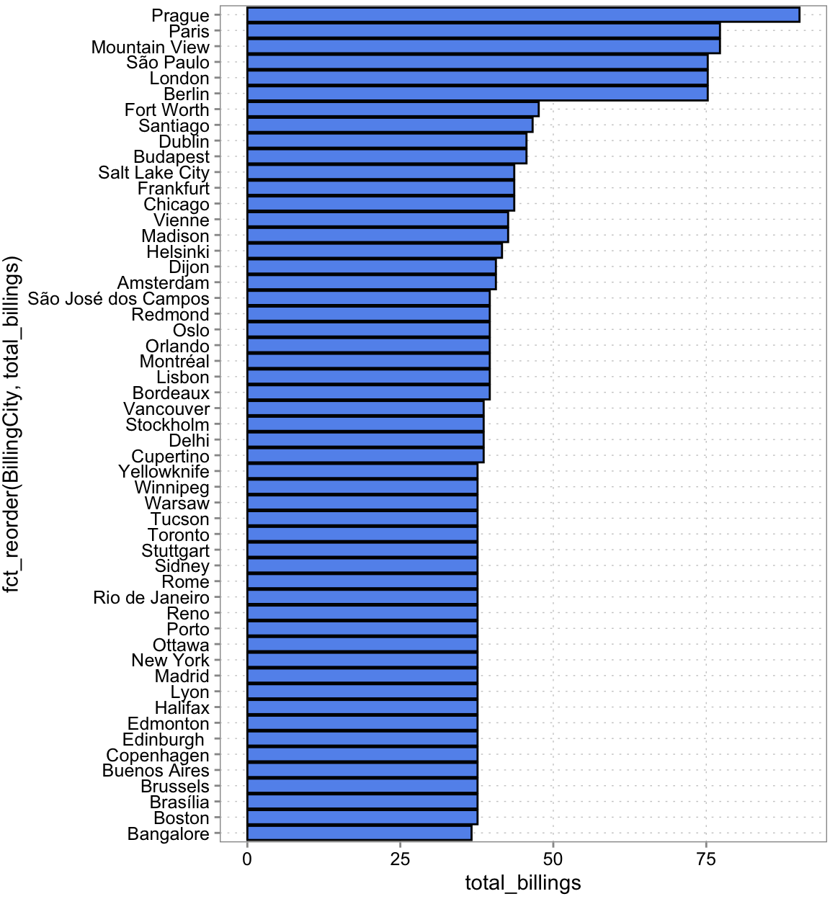
Or if you would put this into a presentation later, add an action title and make it pretty with a few more lines:
rev_by_city |>
ggplot(aes(y = fct_reorder(BillingCity, total_billings),
x = total_billings)) +
geom_col(fill = "darkorchid")+
theme_minimal() +
theme(panel.grid.major.y = element_blank(),
axis.ticks.y = element_line()) +
scale_x_continuous(expand = expansion(0.01)) +
labs(
title = "Locate the festival in Eastern Europe",
subtitle = "Comparison of total revenues by customer location",
caption = "source: company internal data",
y = "City",
x = "Total revenues ($)"
)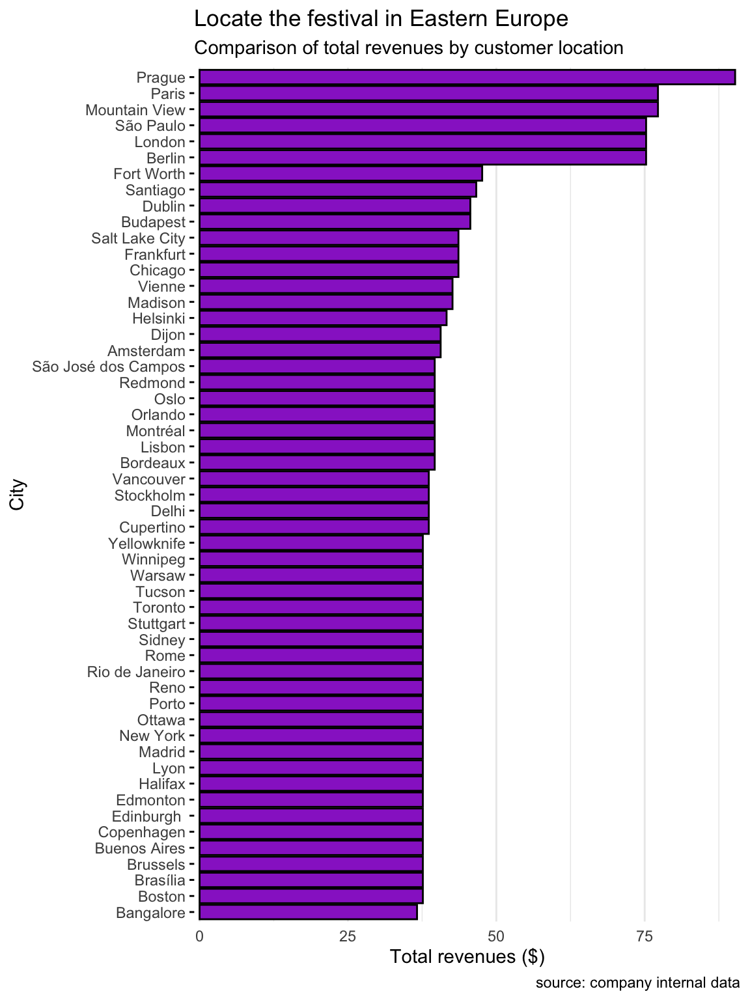
But let’s stop here. Is Prague really where we want to put our festival? Is it the most densely populated city for example? Given our discussion above, we probably want to take density into account to also attract as many new customers as possible. (Again, we are ignoring costs …). After a bit of googling, you find city data here at simplemaps:
library(readxl)
world_cities <- read_excel("analysisgen/worldcities.xlsx")
world_cities <-
world_cities |>
mutate(
country = case_when(
country == "United States" ~ "USA",
country == "Czechia" ~ "Czech Republic",
.default = country)
)
head(world_cities)| city | city_ascii | lat | lng | country | iso2 | iso3 | admin_name | capital | population | id |
|---|---|---|---|---|---|---|---|---|---|---|
| Tokyo | Tokyo | 35.6897 | 139.6922 | Japan | JP | JPN | Tōkyō | primary | 37732000 | 1392685764 |
| Jakarta | Jakarta | -6.1750 | 106.8275 | Indonesia | ID | IDN | Jakarta | primary | 33756000 | 1360771077 |
| Delhi | Delhi | 28.6100 | 77.2300 | India | IN | IND | Delhi | admin | 32226000 | 1356872604 |
| Guangzhou | Guangzhou | 23.1300 | 113.2600 | China | CN | CHN | Guangdong | admin | 26940000 | 1156237133 |
| Mumbai | Mumbai | 19.0761 | 72.8775 | India | IN | IND | Mahārāshtra | admin | 24973000 | 1356226629 |
| Manila | Manila | 14.5958 | 120.9772 | Philippines | PH | PHL | Manila | primary | 24922000 | 1608618140 |
We need to clean this one up a bit
Let’s merge this to our city data and compare
city_data <-
rev_by_city |>
left_join(
world_cities |> select(city, country, population),
by = join_by(BillingCity == city, BillingCountry == country)
)
head(city_data)| BillingCity | BillingCountry | total_billings | population |
|---|---|---|---|
| Prague | Czech Republic | 90.24 | 1335084 |
| Mountain View | USA | 77.24 | 82409 |
| Paris | France | 77.24 | 11060000 |
| Berlin | Germany | 75.24 | 4473101 |
| London | United Kingdom | 75.24 | 11262000 |
| São Paulo | Brazil | 75.24 | 23086000 |
Now, how do we trade off our customer base in a location and the population there?
city_data |>
arrange(-population) |>
head()| BillingCity | BillingCountry | total_billings | population |
|---|---|---|---|
| Delhi | India | 38.62 | 32226000 |
| São Paulo | Brazil | 75.24 | 23086000 |
| New York | USA | 37.62 | 18972871 |
| Buenos Aires | Argentina | 37.62 | 16710000 |
| Bangalore | India | 36.64 | 15386000 |
| Rio de Janeiro | Brazil | 37.62 | 12592000 |
Just eye-balling, Sao Paulo seems a good candidate as it is the only one in the top 6 of both categories.
7.3.5 Finding the line-up
To decide on the four popular artists and the four up-and-coming bands we want in our line-up, we need to analyze our sales. Looking at the diagram, the data is dispersed across various tables. That is often the case to reduce the size of the database. What do we need now:
- We need to figure out which artists are popular in Sao Paulo
- We need to figure out which music genres are popular in Sao Paulo
- From the popular genres, we need to pick four artists
Let’s look at some of the other tables
invoice_items <- tbl(conn, "invoice_items")
glimpse(invoice_items)Rows: ??
Columns: 5
Database: sqlite 3.47.1 [/Users/judith/Library/CloudStorage/Dropbox/324070-M-6-3DM/DDDMbook/analysisgen/chinook.db]
$ InvoiceLineId <int> 1, 2, 3, 4, 5, 6, 7, 8, 9, 10, 11, 12, 13, 14, 15, 16, 1…
$ InvoiceId <int> 1, 1, 2, 2, 2, 2, 3, 3, 3, 3, 3, 3, 4, 4, 4, 4, 4, 4, 4,…
$ TrackId <int> 2, 4, 6, 8, 10, 12, 16, 20, 24, 28, 32, 36, 42, 48, 54, …
$ UnitPrice <dbl> 0.99, 0.99, 0.99, 0.99, 0.99, 0.99, 0.99, 0.99, 0.99, 0.…
$ Quantity <int> 1, 1, 1, 1, 1, 1, 1, 1, 1, 1, 1, 1, 1, 1, 1, 1, 1, 1, 1,…tracks <- tbl(conn, "tracks")
glimpse(tracks)Rows: ??
Columns: 9
Database: sqlite 3.47.1 [/Users/judith/Library/CloudStorage/Dropbox/324070-M-6-3DM/DDDMbook/analysisgen/chinook.db]
$ TrackId <int> 1, 2, 3, 4, 5, 6, 7, 8, 9, 10, 11, 12, 13, 14, 15, 16, 17…
$ Name <chr> "For Those About To Rock (We Salute You)", "Balls to the …
$ AlbumId <int> 1, 2, 3, 3, 3, 1, 1, 1, 1, 1, 1, 1, 1, 1, 4, 4, 4, 4, 4, …
$ MediaTypeId <int> 1, 2, 2, 2, 2, 1, 1, 1, 1, 1, 1, 1, 1, 1, 1, 1, 1, 1, 1, …
$ GenreId <int> 1, 1, 1, 1, 1, 1, 1, 1, 1, 1, 1, 1, 1, 1, 1, 1, 1, 1, 1, …
$ Composer <chr> "Angus Young, Malcolm Young, Brian Johnson", NA, "F. Balt…
$ Milliseconds <int> 343719, 342562, 230619, 252051, 375418, 205662, 233926, 2…
$ Bytes <int> 11170334, 5510424, 3990994, 4331779, 6290521, 6713451, 76…
$ UnitPrice <dbl> 0.99, 0.99, 0.99, 0.99, 0.99, 0.99, 0.99, 0.99, 0.99, 0.9…We need to merge the TrackId in invoices_items. We can match this to the invoices table via the InvoiceId. With the TrackId we can match the data in the tracks table to the invoices, which is what we are really after. First, we only need the São Paulo invoices and then we join TrackId from the invoices_items table to the data. The we join the tracks data using the TrackId:
bought_tracks <-
tbl(conn, "invoices") |>
filter(BillingCity %in% c("São Paulo")) |>
inner_join(invoice_items, join_by(InvoiceId == InvoiceId)) |>
select(InvoiceId, TrackId) |>
inner_join(
tracks |> select(TrackId, AlbumId, GenreId),
join_by(TrackId == TrackId))
head(bought_tracks)| InvoiceId | TrackId | AlbumId | GenreId |
|---|---|---|---|
| 25 | 738 | 57 | 7 |
| 25 | 744 | 57 | 7 |
| 25 | 750 | 58 | 1 |
| 25 | 756 | 59 | 1 |
| 25 | 762 | 60 | 1 |
| 25 | 768 | 61 | 1 |
With the AlbumID we can get the artist from the albums data.
genres <- tbl(conn, "genres") |>
rename(Genre = Name)
artists <- tbl(conn, "artists") |>
rename(Artist = Name)
popular_tracks_data <-
bought_tracks |>
inner_join(tbl(conn, "albums"), join_by(AlbumId == AlbumId)) |>
inner_join(genres, join_by(GenreId == GenreId)) |>
inner_join(artists, join_by(ArtistId == ArtistId)) |>
collect()
head(popular_tracks_data)| InvoiceId | TrackId | AlbumId | GenreId | Title | ArtistId | Genre | Artist |
|---|---|---|---|---|---|---|---|
| 25 | 738 | 57 | 7 | Cássia Eller - Sem Limite [Disc 1] | 77 | Latin | Cássia Eller |
| 25 | 744 | 57 | 7 | Cássia Eller - Sem Limite [Disc 1] | 77 | Latin | Cássia Eller |
| 25 | 750 | 58 | 1 | Come Taste The Band | 58 | Rock | Deep Purple |
| 25 | 756 | 59 | 1 | Deep Purple In Rock | 58 | Rock | Deep Purple |
| 25 | 762 | 60 | 1 | Fireball | 58 | Rock | Deep Purple |
| 25 | 768 | 61 | 1 | Knocking at Your Back Door: The Best Of Deep Purple in the 80’s | 58 | Rock | Deep Purple |
popular_artists <-
popular_tracks_data |>
summarise(
nr_tracks_bought = n(),
.by = Artist
) |>
arrange(-nr_tracks_bought)
# Now, what are the 4 most popular artists?
head(popular_artists, 4)| Artist | nr_tracks_bought |
|---|---|
| Pearl Jam | 11 |
| Deep Purple | 7 |
| R.E.M. | 7 |
| U2 | 6 |
Now let’s try to find the up-and-coming artists in the popular genres. First we need to figure out which these are.
popular_genres <-
popular_tracks_data |>
summarise(
nr_tracks_bought = n(),
.by = c(Genre, GenreId)
) |>
arrange(-nr_tracks_bought)
head(popular_genres)| Genre | GenreId | nr_tracks_bought |
|---|---|---|
| Rock | 1 | 40 |
| Latin | 7 | 18 |
| Metal | 3 | 5 |
| Alternative & Punk | 4 | 5 |
| Reggae | 8 | 3 |
| Hip Hop/Rap | 17 | 2 |
Looks like we want to focus on Rock and Latin. Now we need to think about how we can identify new but interesting Artists. What are the characteristics of such Artists?
- Not popular yet
- Few, but recent Albums
- Should show signs of recent popularity.
Think about these characteristica for a second. Did you realize that these are essentially, filtering conditions? The first bullet point translates into: should not be in the upper part of our popular_artists data.frame. The second means, should have few but recently released Albums. Maybe we can filter for this using InvoiceDate. The third point we could translate as have most purchases in the last six months.
Once we have the relevant data collected from all tables, we only need to apply the correct filters that describe the characteristics above.
artists_tracks_link <-
tracks |>
filter(GenreId %in% c(1, 7)) |>
select(TrackId, AlbumId) |>
inner_join(tbl(conn, "albums"), join_by(AlbumId == AlbumId)) |>
inner_join(artists, join_by(ArtistId == ArtistId)) |>
select(TrackId, Artist, ArtistId)
head(artists_tracks_link)| TrackId | Artist | ArtistId |
|---|---|---|
| 1 | AC/DC | 1 |
| 2 | Accept | 2 |
| 3 | Accept | 2 |
| 4 | Accept | 2 |
| 5 | Accept | 2 |
| 6 | AC/DC | 1 |
young_artists <-
tbl(conn, "albums") |>
count(ArtistId) |>
filter(n == 1) |>
select(-n)
head(young_artists)| ArtistId |
|---|
| 3 |
| 4 |
| 5 |
| 7 |
| 9 |
| 10 |
young_artist_invoices <-
tbl(conn, "invoices") |>
select(InvoiceId, InvoiceDate) |>
inner_join(invoice_items, join_by(InvoiceId == InvoiceId)) |>
inner_join(artists_tracks_link, join_by(TrackId == TrackId)) |>
inner_join(young_artists, join_by(ArtistId == ArtistId)) |>
select(InvoiceId, InvoiceDate, TrackId, Artist) |>
collect()
head(young_artist_invoices)| InvoiceId | InvoiceDate | TrackId | Artist |
|---|---|---|---|
| 3 | 2009-01-03 00:00:00 | 24 | Aerosmith |
| 109 | 2010-04-16 00:00:00 | 25 | Aerosmith |
| 214 | 2011-07-25 00:00:00 | 26 | Aerosmith |
| 3 | 2009-01-03 00:00:00 | 28 | Aerosmith |
| 320 | 2012-11-06 00:00:00 | 30 | Aerosmith |
| 109 | 2010-04-16 00:00:00 | 31 | Aerosmith |
young_artist_lineup <-
young_artist_invoices |>
mutate(InvoiceDate = ymd_hms(InvoiceDate),
year = year(InvoiceDate)) |>
# filter to only look at most recent purchases
filter(year == max(year)) |>
# counting purchases
summarise(
nr_buys = n(),
.by = Artist
) |>
# make sure to take out the top 6 popular artists:
filter(!(Artist %in% head(popular_artists$Artist, 6))) |>
# now sort and show the top 4
arrange(-nr_buys) |>
head(4)
young_artist_lineup| Artist | nr_buys |
|---|---|
| O Terço | 8 |
| Men At Work | 5 |
| The Who | 5 |
| Soundgarden | 4 |
7.3.6 Wrapping up
In summary:
- We decide to propose Sao Paulo as a location because it is the only city in the top six by number of existing customers and population to draw new customers from.
- We propose 8 artists based on time constraints
- We propose the top 4 artists based on what is popular with existing customers in the Sao Paulo:
- We propose the top 4 newcomers (artists with only one album in our db) and most track purchases during the most recent year.
We could think of other alternatives, but we stop here and evaluate the current one. It fits our criteria established above. The big issue is that we weren’t given any budget constraints. We could potentially also do a better job at identifying newcomers. Or we could also consider not only the city but define a radius of influence around a city when deciding on a location. We can still propose the current solution. We have solid arguments to justify our choices. But should keep these limitations in mind.
7.4 Merging and aggregating data in Excel
Everything we have done here, we can do in Excel, as long as the data we are dealing with is not too big. In this section we want to give a short intro into tables, queries, and pivot tables in excel. These tools have become quite powerful, so we showcase them here for comparison.
With the right tools, you can query SQL databases directly from excel too. To keep things simple, we put the tables in the chinook database into separate excel sheets in one file (see Figure 7.3.)
7.4.1 Make use of the table feature
The first thing we want to turn the data cells in these sheets into “tables” as these makes it easier to reference them later. Doing so is simple. Below we show how to do this for the invoices data sheet. Select any cell within the data range that constitutes your table (see Figure 7.3), then click on “Format as Table”. Pick a format, then make sure the cell range is correct and “has headers is checked”.
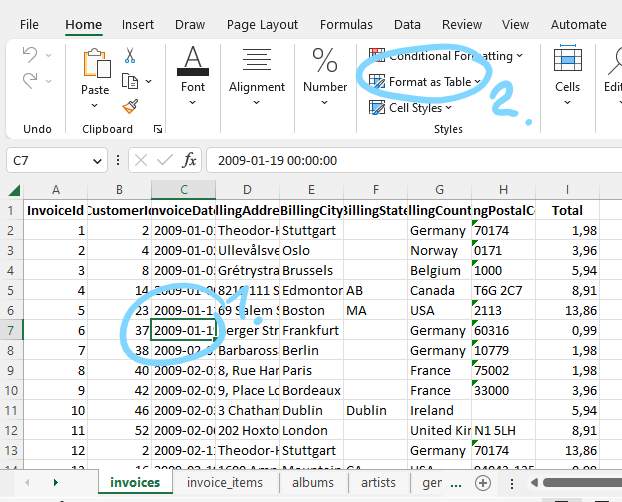
Finally, we click on the Table Design section in the Excel ribbon and choose a name for the table (see Figure 7.4).
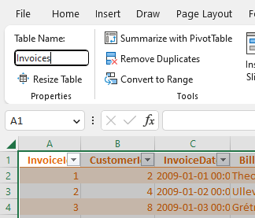
7.4.2 Pivot tables as a powerful aggregation feature
Everything we have done so far with grouping and summarizing using the summarise() function in R can be done with the help of excel pivot tables to. Let us repeat the exercise of finding the city where most of Chinook’s revenues are originating from.
Click on the “Summarize with PivotTable” button you see in Figure 7.4. Choose to put the table into a new sheet. A new sheet will open and on the side you will see a Fields menu as shown in Figure 7.5. We want a similar output as we got from the summarise() function in R. We want the sum of the revenues grouped by billing city. So the rows of the output table should be billing cities. To get that, drag the BillingCity field into the Rows section (see Figure 7.5). The values in each row should be the sum of the “Total” field. So drag the “Total” field into the Values section. It usually defaults to “Sum of ..” which is what we want in this case. If it is not click on the down arrow, then on “Value Field Settings” in that menu, you can choose what aggregation is performed (sum, count, mean, min, max, etc.)
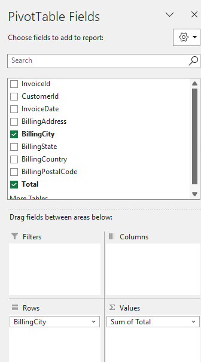
We almost got what we want. We just need to sort the resulting pivot table from city with highest total revenues to lowest. For whatever reason, that sorting feature is a bit hidden. Right-click on any cell in the Sum of Total column and there you find a sort option (see Figure 7.6).

This is the result:
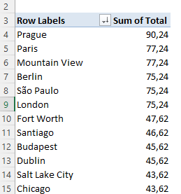
7.4.3 Joining data in Excel
Joining data in Excel used to be a very error prone and cumbersome operation. It still is not as straightforward as with a programming language. But the current capabilities make it much much easier and clearer to debug. Here is one approach we like. We will illustrate merging using the question: “What are the genres of music that are bought by customers in Sao Paulo?” To figure this out, we need to merge three tables: invoices, invoice_items, and tracks. First we need to define a table for invoice_items and tracks—just as we did above for Invoices. Second, we need to create a query link for each table. This is because we will use power query to do the merging. Here is how we define a query for each table.
Click on a cell for the table we want to link, then go to the Data section and click on “From Table/Range” (see Figure 7.8)
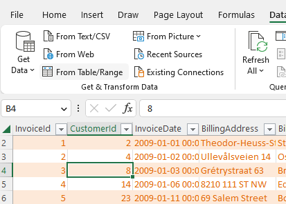
This will open the power query editor. We are not going to do much there yet. Hit “close and load to”
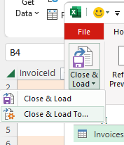
and then click “Only Create Connection”
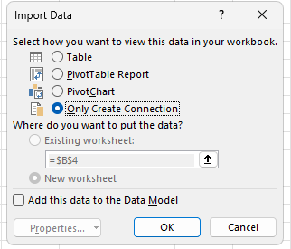
Do this for all three tables we want to merge. You should then have three queries in your query sidebar:
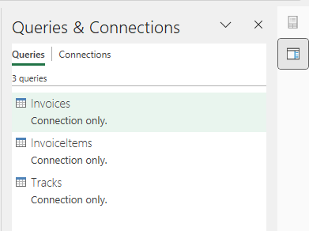
Now we are ready to do the merging. We have to do this in two steps because we want to do two merges. Click again on the Data section, then click the “Get Data” drop-down menu and choose “Combine Queries”.
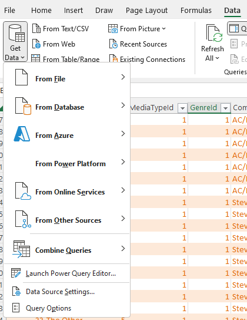
A menu will open where we can select two queries to join. We choose Invoices and InvoiceItems. Then we click on the columns in each table we want to join by (“InvoiceID”). Finally, we select “inner join” under “Join Kind”. Your selection should look like this (Figure 7.13):
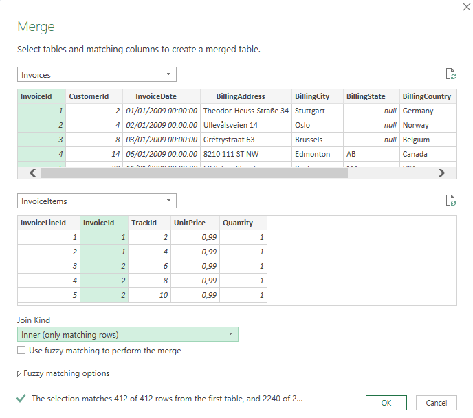
Once you click “OK”, you will enter the power query editor again. It will show a new query called Merge1. Rename that to something like “SaoPauloTracks” by right-clicking on “Merge1” and choosing rename.
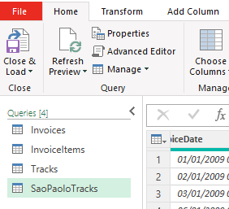
We called it SaoPaulo tracks, because we are going to filter this query a bit now too. Click on the dropdown arrow right next to the column “BillingCity” and select only Sao Paulo. Then click on the Icon right next to the column header InvoiceItems (see Figure 7.15.)
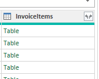
This contains all the columns from the joint invoice_items table. When you click on it, it asks you what columns to keep. We only need “TrackId”. We also do not need a lot of the other columns still in this query. Click on Choose columns and get rid of all but InvoiceId, BillingCity, and TrackId. You final query should look like this and list the following steps on the right (see Figure 7.16.)
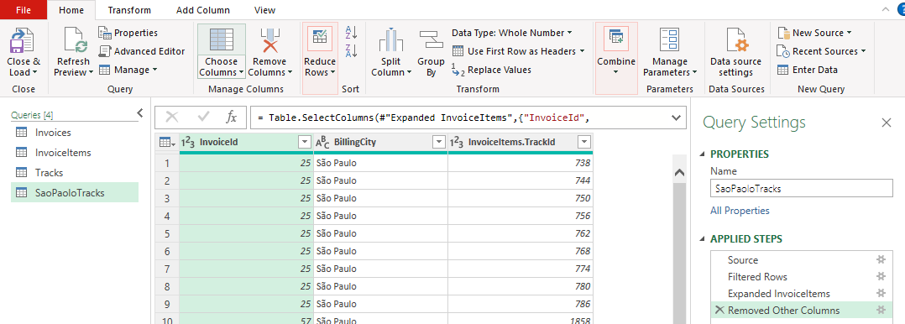
Click on “close and load to” again (see Figure 7.9) and again choose “Only Create Connection”. This is only an intermediate join that we do not want to output into our excel worksheets. We do need still merge the third table onto this. Now we are essentially repeat the join steps again, starting from “Get Data” and “Combine Queries” (Figure 7.12). This time we merge the SaoPauloTracks query and the Tracks query. And we join them by TracksId and choose “inner join” again.
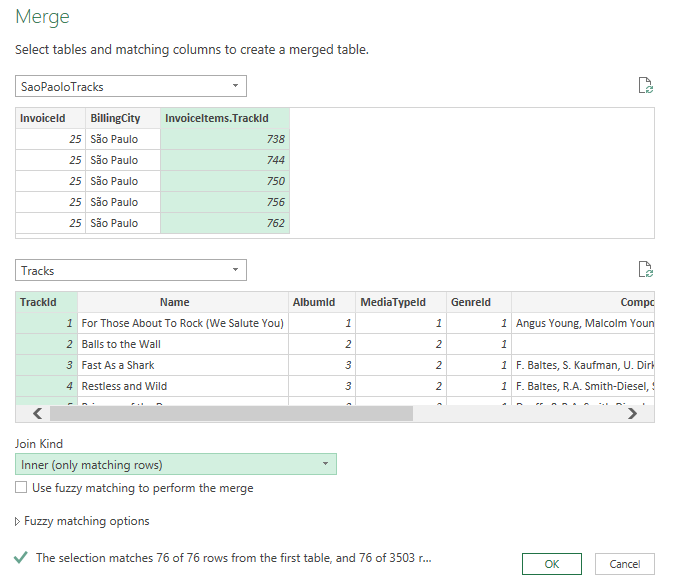
We click ok and click on expand right next to the header of the “Tracks” column and select only the GenreId and AlbumID columns. We rename the query to something like SaoPauloGenres. Now we again hit Close and load to. But this time we export to a new table and a new worksheet. The result should look like this (Figure 7.18):
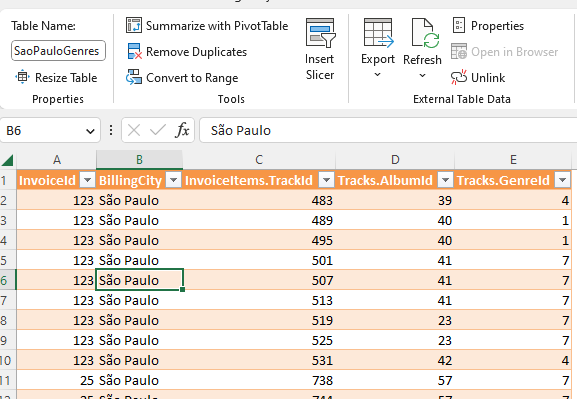
From here now we can produce produce a pivot table that produces the most popular genreIds and so on. We leave the rest of the case as an excercise.